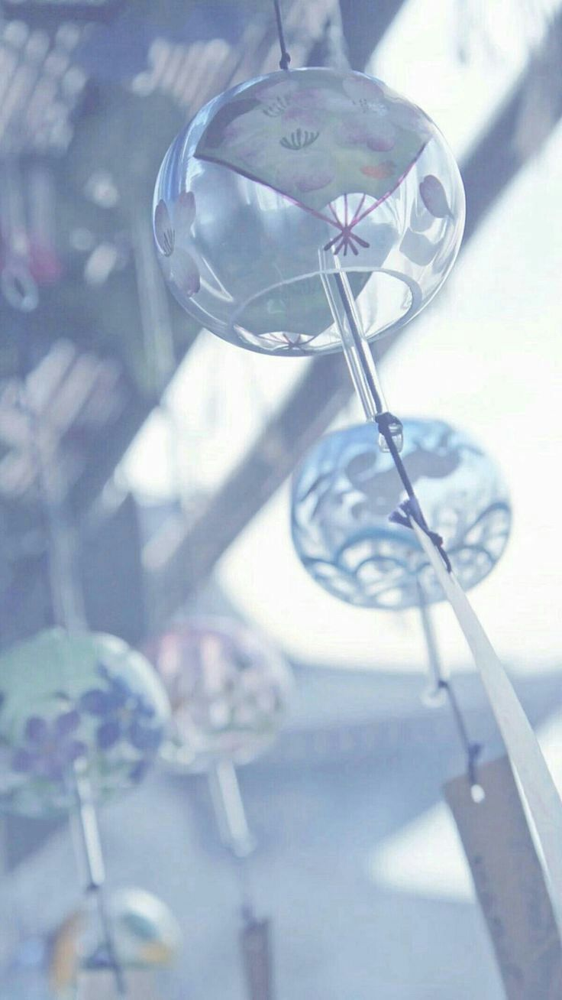

About Me
My name is Wen-Chin Chang and I am a senior in Tsing-Hua University double majoring in Foreign Language and Literature and Quantitative Finance. I was born in Canada, yet was soon brought back to Taiwan before I could produce a word. Since then, I have been living with my family in Taipei. Growing up, I have been a curious and introspective kid, often pondering on my thoughts and tend to find interests in many things. Whether it is ballet, piano, flute, yoga, figure skating or painting, I always try to seize the moment and enjoy both the accomplishment and frustration brought by these activities. Besides these hobbies, I am greatly fascinated by the diversity of languages and cultures around the world. Getting exposed to different cultures, I realized that behind every language is a unique perspective towards the world, and that the world before me expands as I learn a new language. Aspiring to learning as much language as I can, I joined a language exchange program recently to polish my Japanese skill and communicate with Japanese people, trying to unveil the different perspectives and culture behind the language. I can’t wait to see what the future holds!
我的名字是張雯晴，現在就讀於國立清華大學雙主修外國語文學系與計量財務金融學系。我出生於加拿大，並在出生後不久就回到了台灣，與家人一起生活在台北。從小我就是一個歡胡思亂想的好奇寶寶，常常沈浸在自己的思想裡也很容易對身邊的事物產生興趣。不論是跳芭雷、彈鋼琴、吹長笛、做瑜珈、溜冰或是畫畫，我總是盡情的享受著每一個瞬間並且去感受和接納辦隨這些活動而來的喜悅與挫折。除了些興趣以外，我也深深的被這個世界上各式各樣的語言與文化吸引著。每當接觸一個新的語言，就像是打開了一扇通往不同思維與世界觀的門，眼前的世界彷彿變得更寬闊了。因此，我立志要盡我所能的學各式各樣的語言，並且為了朝這個目標前進，我最近參加了一個語言交換計畫以增進我的日文能力，並藉此機會與日本人進行文化與思想的交流。今後我也會帶著期待與好奇的心繼續向未知的未來前進！